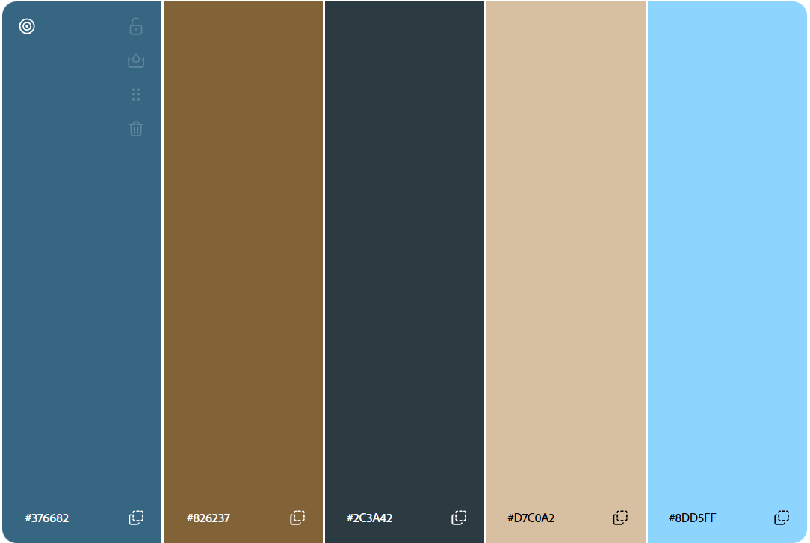

Information about Owen Nguyen
Owen Nguyen -- Class of 2028 at Worcester Polytechnic Institute (WPI)
CS BS/MS
Previous CS Courses
- [CS1102] Accelerated Introduction to Program Design
- [CS2103] Accelerated Object Oriented Programming
- [CS2303] Systems Programming Concepts
- [CS2223] Algorithms
- [CS2022] Discrete Mathematics
- [CS2011] Introduction to Machine Organization and Assembly Language
- [CS3043] Social Implications of Information Processing
- [CS4342] Machine Learning
- [CS3013] Operating Systems
- [CS3431] Database Systems
- [CS3733] Software Engineering
- [CS4343] Deep Learning (In Progress)
- [CS4241] Webware (In Progress)
Experience
Experience with the following technologies
- HTML: Some
- CSS: Some
- JavaScript / Typescript: Some
Working experience
- Unity Provisions
- Maine Adaptive
- WPI CS Department
- Iridium Satellite
Color palette for this site
